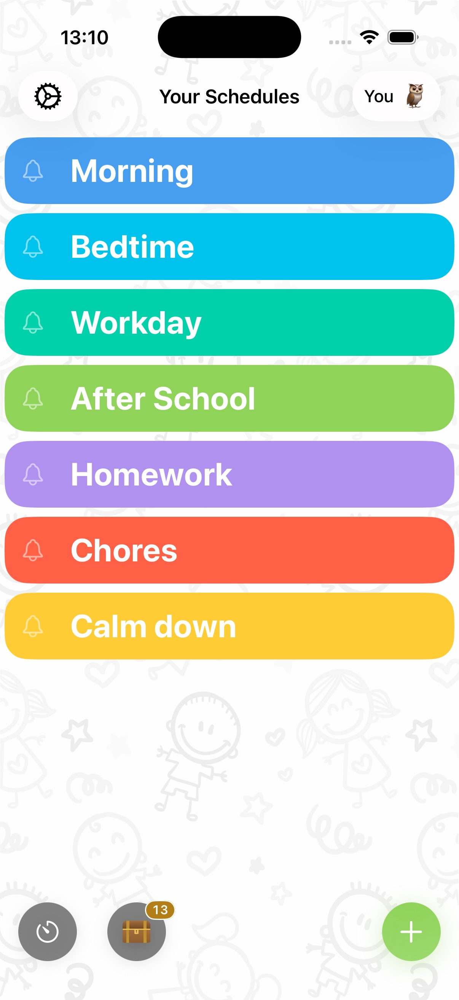

What is a first-then board?
A first-then board is a two-picture visual: the "first" slot shows a required, usually non-preferred task; the "then" slot shows the preferred activity that follows. It's a staple of ABA therapy, speech therapy and special-education classrooms because it does one thing brilliantly: it makes the reward for cooperation visible at the exact moment of resistance. Both halves of the pattern rest on practices NCAEP lists as evidence-based for autism, visual supports and reinforcement. UNC's AFIRM program describes the first/then schedule as a type of visual support that sequences two events to help a learner understand what comes next, and includes a first/then template in its visual supports packet. Its practice packet on reinforcement covers the principle a first-then board runs on.
For a child staring down a hard demand, "you can play later" is an abstract promise. A picture of the trampoline sitting right after the picture of homework is a contract they can see.
First-then board apps for iPad compared
Three iPad apps come up most often for first-then boards. They take different approaches. We make Visual Schedule, so read this with that in mind.
- Visual Schedule (our app). Runs on iPad, iPhone and Mac. A first-then board is a schedule with two tasks, and the same app grows into full daily routines with a full-screen visual timer, Kid Profiles and routine templates. Free to download, with optional premium features. There is no voice recording for tasks and no Android version.
- First Then Visual Schedule HD. By Good Karma Applications, for iPad and iPhone. First-then boards are built in, next to schedules, task analyses, social stories, choice boards and video models, with a large symbol library. A one-time purchase, English only.
- Choiceworks. By Bee Visual, for iPad and iPhone. It has no board called first-then, but its schedule boards show what is happening now and what comes next, which does the same job. It also has waiting boards with a visual timer and lets you add your own recorded voice to cards. A one-time purchase with no free version.
What about Tiimo? It is a visual day planner for teens and adults (App Store age rating 9+), and its developer does not describe a first-then mode, so it is a better fit for a teen planning their own day than for a young child's first-then board. Our full comparison of visual schedule apps has more detail on each one.
Why it works
- It reframes the demand. The conversation shifts from "do this" to "this, then that": the hard task becomes the doorway to the good one.
- It's concrete. No time concepts, no reading, no trust in verbal promises required. Perfect for pre-readers and concrete thinkers.
- It ends negotiation. The board is the deal. Checking off "first" unlocks "then" every single time, which is what builds trust in the system.
Running a first-then board in Visual Schedule

- Create a schedule with exactly two tiles. Tile 1: the demand (homework, tidy up, bath). Tile 2: the motivator (trampoline, tablet, park).
- Make the "then" picture irresistible. Use a real photo of the actual reward, like their trampoline or a still from their favorite show, from your photo library or Pixabay.
- Add a timer to the "first" task if it's duration-based ("first 15 minutes of reading"), so the child watches themselves earning the reward.
- The child taps "first" complete themselves. That tap is the psychological unlock. Then you deliver "then" immediately and without renegotiation.
From first-then to full schedules
The first-then board is usually a bridge. Once your child trusts the two-tile pattern, extend it: first-then-then becomes a morning routine, and within weeks many kids are running a full-day visual schedule in the same app, with no new system to learn. That's the advantage of building first-then inside a real schedule app rather than a single-purpose board.
Want more detail on other apps? See our honest comparison of visual schedule apps for kids with ADHD or autism, including where each one beats ours.
First set it up, then relax
Two tiles, one deal, zero laminating. Run first-then boards and full visual schedules in one free app.
Download Visual Schedule free